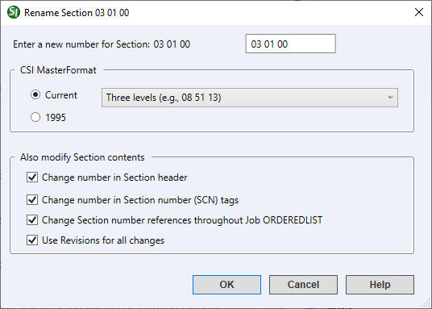
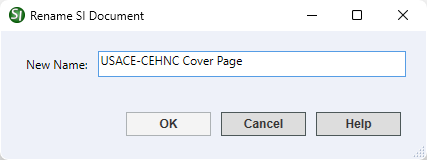

This command can also be executed from the SpecsIntact Explorer's Right-click menu.
The Rename command offers a flexible approach to managing Section Numbering. It lets you reassign a Section's numerical identifier and provides various options for updating this number across the Section header, within SCN tags, and in Section References, even when using Revisions. These changes are displayed in the SpecsIntact Explorer's Contents panel.
Rename Sections

- Enter a new number for Section - Provides the option to specify a revised Section Number, which must conform to the CSI MasterFormat level selected below. When renaming a Section, the field is pre-formatted to accept only numeric characters; spaces or periods are not required.
- CSI MasterFormat - Provides the option to select either the Current or 1995 CSI MasterFormat. SpecsIntact defaults to using the Current CSI MasterFormat, and provides the available levels in the drop-down list to include Three (e.g., 08 51 13), Four (e.g., 08 51 13.00), or Five (e.g., 08 51 13.00 20). For legacy projects, the 1995 version remains available to ensure seamless compatibility with older projects. The system implements backward compatibility using the legacy CSI MasterFormat to accurately display the correct version.
- Also modify Section contents - Provides multiple automated options for updating the new Section Number across the selected Section's Section header, Section (SCN) tags, and all associated References throughout the selected project while tracking the changes with Revisions. These options are enabled by default and eliminate the need for manual editing and for maintaining precise referencing throughout.
- Change number in Section header - Updates the Section Number directly within the Section Header (HDR) tags.
- Change number in Section number (SCN) tags - Updates the Section Number contained directly within the Section Number (SCN) tags.
- Change Section number references throughout Job - Updates the Section Number contained directly within the Section Reference (SRF) tags.
- Use Revisions for all changes - Ensures all alterations to the Section Header, Section Number, and Section Number References are automatically tracked with Revisions. The added content is identified with an underscore and the green ADD tags, while the deleted text is identified with a strikethrough and the red DEL tags.
Rules and Warnings:
- If the new Section Number already exists in the Job, you will be asked if you want to overwrite the existing Section with that number.
- If you choose a number that does not conform to the CSI MasterFormat Numbering Rules, a warning window will appear.
- If the new Section Number conflicts with the Jobs MasterFormat setting, a warning window will appear.
Rename SI Documents
The Rename command also extends its functionality to SI Documents, which are created and managed through the SpecsIntact Explorer's Tools menu > SI Document Templates command. When renaming an SI Document, you are given the option to enter a New Name. It is important to note that SI Documents represent a legacy interface option infrequently used, though remaining accessible for specific requirements.

Standard Windows Commands
 The OK button will execute and save the selections made.
The OK button will execute and save the selections made.
 The Cancel button will close the window without recording any selections or changes entered.
The Cancel button will close the window without recording any selections or changes entered.
 The Help button will open the Help Topic for this window.
The Help button will open the Help Topic for this window.
How To Use This Feature
 to Rename a Section:
to Rename a Section:
- In the SpecsIntact Explorer, select a Job or Master
- In the Contents panel, select a Section, then perform one of the following:
- Right-click and select Rename
- Select the Sections menu and select Rename
- When the Rename window appears, select the appropriate CSI MasterFormat (selecting a lower level will automatically remove the unwanted numbers)
- In the Enter a new number for Section field, enter the new Section Number
- Below Also modify Section contents, perform one of the following:
- Leave the default options selected
- Deselect any options you do not wish to apply
- On the Rename Section window, click Yes
- On the Section Renamed window, click OK
to Rename an SI Document:
- In the SpecsIntact Explorer, select a Job or Master
- In the Contents panel, select an SI Document you want to rename, then perform one of the following:
- Right-click and select Rename
- Select the Sections menu and select Rename
- When the Rename window opens, enter a new name in the New Name field
- Click OK
- When the Document Renamed window appears, click OK
Users are encouraged to visit the SpecsIntact Website's Support & Help Center for access to all of our User Tools, including Web-Based Help (containing Troubleshooting, Frequently Asked Questions (FAQs), Technical Notes, and Known Problems), eLearning Modules (video tutorials), and printable Guides.